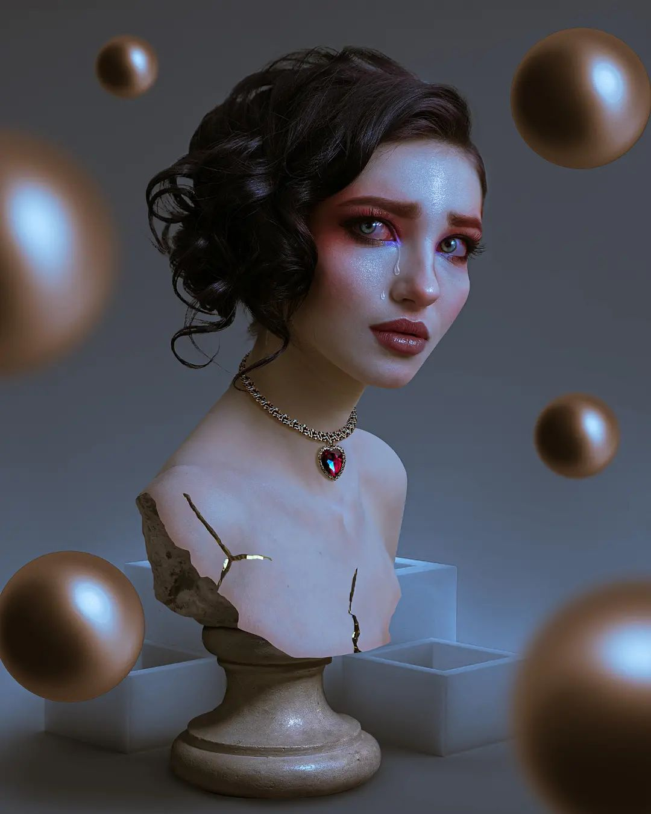

INFLUENCERS DEL DISEÑO
Gabriela Castillo
Con estilos únicos y propuestas innovadoras, estos creativos no solo han conquistado al público, también están redefiniendo el diseño gráfico en la era digital.
En el dinámico mundo del diseño gráfico, tres creativos mexicanos han logrado destacar y redefinir su campo a través de sus habilidades únicas y su conexión con la audiencia digital.
Patricia Nicolás, Roco PSD, y Vanila Ryder no solo han dejado una marca en el diseño gráfico, sino que también han influido profundamente en la comunidad creativa en línea. Cada uno, con su estilo distintivo, ha encontrado una forma de compartir su arte y conocimientos, inspirando a una nueva generación de diseñadores.
Vanila Ryder
ACUARELA A LA MEXICANA
“Terminé mi carrera, me titulé con mi álbum ilustrado, trabajé para HBO Max, colabore con Adobe...Fue el año de cumplir metas...y vamos por más”. -Vanila Ryder, 2023
Jessica Álvarez, conocida en la comunidad artística como Vanila Ryder, es una ilustradora y diseñadora gráfica egresada de la UAM Azcapotzalco, cuyo trabajo se distingue por su delicado uso de la acuarela y su habilidad en la ilustración digital.
Vanila Ryder ha sido profundamente influenciada por la estética y las técnicas artísticas de la cultura japonesa, lo que se refleja en la sutileza y el detalle de sus obras.
Aunque Vanila trabaja tanto en formatos digitales como tradicionales, su verdadera pasión radica en la acuarela, una técnica que utiliza para crear ilustraciones llenas de vida y color.Su estilo combina la delicadeza de la acuarela con la precisión de la ilustración digital, resultando en obras que son visualmente atractivas y emocionalmente resonantes.
Además, forma parte de la comunidad de Domestika, donde comparte su portafolio y participa en cursos, ayudando a otros a explorar y desarrollar sus habilidades artísticas. Cabe mencionar que ha hecho colaboraciones con estudios de renomnre como Cartoon Network.

Patricia Nicolas
REINA DEL FOTOMONTAJE "DARK FANTASY"
“Aprendí a editar moviendolé a lo menso a Photoshop”. - Patricia Nicolas , 2024
Originaria de Oaxaca, Patricia Nicolás ha capturado la imaginación de miles con su estilo de fotomontaje que fusiona la fantasía oscura con elementos cotidianos. Su trabajo se caracteriza por la transformación de lo real en lo surreal, creando imágenes que parecen sacadas de un sueño.
Sus composiciones están cargadas de simbolismo y emoción, y han encontrado un público entusiasta en plataformas como TikTok.
Además de su arte visual, Patricia ha utilizado las redes sociales como una herramienta educativa, compartiendo tutoriales de edición y técnicas de Photoshop que van desde lo básico hasta lo más avanzado. Con un estilo de enseñanza accesible y un humor que resuena con la cultura mexicana, ha construido una comunidad leal que no solo admira su trabajo, sino que también aprende de él. Sus cursos formales de edición en Photoshop han sido un éxito, mostrando cómo el arte digital puede trascender las fronteras culturales y lingüísticas.

Roco PSD
MAESTRO DEL PHOTOSHOP
Roco de la Portilla, también conocido como Roco PSD se ha convertido en un referente indispensable en el mundo de la edición digital gracias a su dominio de Photoshop. Roco junto a su perro Gordom han tenido una presencia fuerte en redes sociales como Instagram, YouTube, y TikTok.
Su estilo de enseñanza es claro, didáctico y adaptado tanto para principiantes como para usuarios avanzados, lo que ha permitido a muchos mejorar significativamente sus habilidades.
El contenido de Roco se mantiene fresco y relevante, siempre alineado con las últimás tendencias del diseño.
Entre los cursos que Roco proprciona destecan Roco enseña cómo realizar ediciones complejas, como manipulación de imágenes, creación de efectos especiales y retoque fotográfico.
Profundiza en el uso de herramientas y funciones particulares de Photoshop, como máscaras, capas de ajuste, pinceles personalizados, y más.
A veces realiza correcciones en vivo de trabajos enviados por sus estudiantes o seguidores, explicando paso a paso cómo mejorar las ediciones.
Roco también ha trabajado para grandes artistas como Angelique Boyer y en el diseño de la etiqueta y edicon promocional del tequila “El Gran Malo” de Luisisto Comunica.
Su habilidad para comunicar conceptos complejos de manera sencilla lo ha convertido en un mentor para su comunidad, ofreciendo consejos personalizados y creando un espacio donde el aprendizaje es tanto efectivo como entretenido. Su compromiso con la educación y su pasión por el diseño gráfico aseguran que su influencia seguirá creciendo.